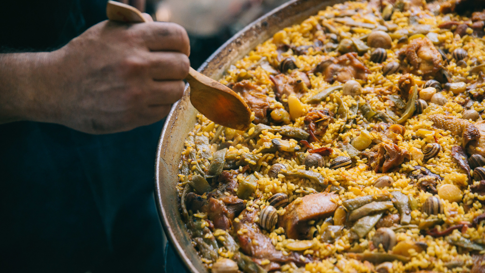

T'agradaria provar els millors peus de porc del mon en un espai únic?
Veure el plat
Una de les nostres especialitats més estimades és la Paella Muntanyenca,
un plat que captura l'essència dels sabors mediterranis i que et transportarà a les terres
montanyenques d'Alacant.
El secret d'una paella autèntica i deliciosa comença amb l'elecció dels millors ingredients.
Utilitzem arròs bomba o arròs de Calasparra, conegut per la seva capacitat d'absorció dels
sabors
del caldo, i l'acompanyem amb un caldo casolà elaborat amb estima, sigui de pollastre o
peix, per
proporcionar una base aromàtica inigualable.
El color i l'aroma característics de la nostra Paella Muntanyenca provenen de l'ús d'azafrà,
un
ingredient que afegim amb curo i precisió. El sofregit, fet amb tomàquets madurs, ceba,
alls, pebrot
verd i pebrot vermell, crea una base rica i saborosa que realça els sabors naturals dels
ingredients.

A la nostra Paella Muntanyenca no li falta la textura i el gust únic de les verdures com les
judies
verdes i el garrofó, una varietat de la judia que aporta un toc especial al plat. També hi
trobaràs
la tendresa de la carn de conill i pollastre, que es dauren amb cura per crear una base
deliciosa.
No oblidem els embutits com la morcilla i la longaniza, que donen una dimensió extra als
sabors. I,
si ho prefereixes, també podem incorporar marisc com els musclos, les gambes o els calamars
per a
una experiència encara més rica.
La nostra Paella Muntanyenca està plena de sabors mediterranis i textures que et faran
tornar per
més. La presentem amb una decoració atractiva i una aroma que t'envoltarà quan la serveixem
a la
teva taula.